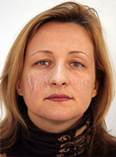

До
 После
После
Поликлиническое отделение Института пластической хирургии и косметологии предлагает своим пациентам и посетителям широкий спектр услуг общемедицинского характера: консультации узких специалистов, доступные и эффективные методы лечения наиболее распространенных заболеваний, современные методы диагностики, позволяющие выявить патологический процесс на ранних стадиях его развития.
Хирургическая коррекция – пластика лба и подтяжка бровей – позволяет устранить проявления возрастных изменений мягких тканей:
- Мы обеспечиваем доступные медицинские услуги для всех пациентов без исключения.
- Мы координируем специалистов из разных областей, чтобы повысить эффективность лечения.
- Мы рассматриваем любое заболевание в контексте и успешно используем комплексный подход для достижения наилучшего результата.
- Мы предлагаем эффективные меры профилактики первичного и повторного развития заболевания.
- Мы ориентируемся на установку доверительных отношений с пациентом и предлагаем не просто однократное оказание помощи, а постоянный контроль состояния пациента и своевременное решение любых проблем.
Услуги поликлинического отделения
Высококвалифицированные врачи поликлинического отделения Института пластической хирургии и косметологии готовы дать консультации и предложить оптимальные методы лечения заболеваний любых органов и систем организма. В том числе:
- заболеваний сердечно-сосудистой системы;
- заболеваний верхних и нижних дыхательных путей, ЛОР-органов;
- заболеваний органов ЖКТ
- заболеваний органов мочевыделительной системы, органов малого таза;
- неврологических заболеваний;
- заболеваний органов зрения;
- кожно-венерологических, аллергических и иммунологических заболеваний;
- заболевания сосудов и т.п.
Мы работаем по двум основным направлениям, предлагая:
1. оказание консультативной помощи пациентам, находящимся на стационарном лечении в клинике;
2. оказание поликлинических услуг пациентам, которые обращаются в клинику в амбулаторном порядке.
В рамках поликлинического отделения Института пластической хирургии и косметологии работают специалисты всех основных направлений современной медицины:
- отделение терапии (консультации специалистов широкого профиля);
- отделение кардиологии (диагностика и лечение заболеваний сердечнососудистой системы);
- отделение общей хирургии (проведение обследования, оперативного лечения, хирургических процедур, перевязок);
- отделение сосудистой хирургии (лечение заболеваний сосудов, в том числе варикозной болезни, оперативное лечение);
- ЛОР-отделение (лечение заболеваний уха, горла и носа, оперативное лечение);
- офтальмологическое отделение (диагностика и лечение заболеваний глаз);
- неврологическое отделение (диагностика и лечение патологии нервной системы),
- гинекологическое отделение (лечение заболеваний органов малого таза у женщин, постоянное наблюдение, оперативное лечение);
- урологическое отделение (лечение заболеваний органов мочевыделительной системы, андрологическая консультация, оперативное лечение, ведение пар с бесплодием);
- отделение травматологии (обследование и лечение пациентов с различными травмами, ортопедическими заболеваниями)
- физиотерапевтическое отделение (лечение современными методами физиотерапевтического воздействия);
- отделение массажа и мануальной терапии.
Все врачи имеют высокую квалификацию и большой опыт работы. Вы можете без опасений доверить свое здоровье врачам поликлинического отделения Института пластической хирургии и косметологии.